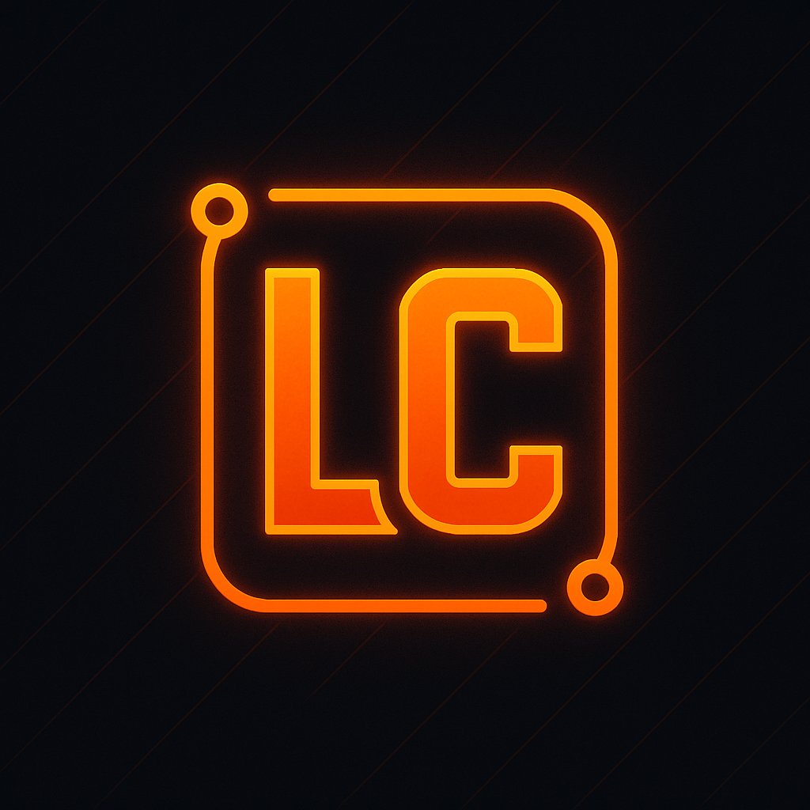
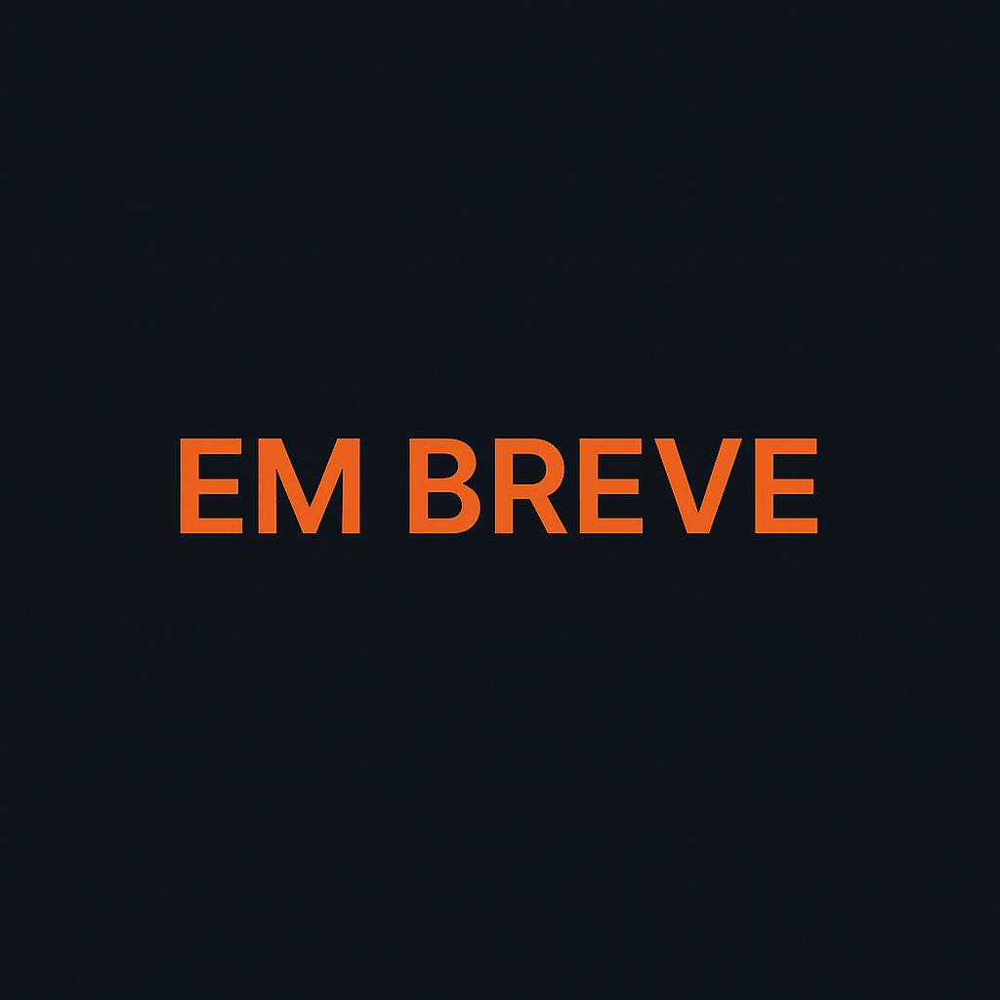

Oi, eu sou Luciano.
Seja bem-vindo.
Saiba Mais
Luciano CarvalhoSou Luciano Oliveira, estudante do 7º semestre de Ciência da Computação, com uma trajetória sólida e apaixonada na área da tecnologia desde os 14 anos. Foi nessa idade que iniciei meu primeiro curso profissionalizante e tive meu primeiro contato com programação, através do HTML. Desde então, meu interesse só cresceu, impulsionando minha busca constante por conhecimento e evolução profissional.
Aos 16 anos, ampliei minha base técnica ao cursar suporte técnico em informática, adquirindo habilidades práticas em hardware e software. Embora tenha iniciado a graduação em Ciências Contábeis, ao chegar ao 6º semestre, percebi que minha verdadeira vocação estava no desenvolvimento de sistemas — área que realmente me inspira e onde posso aplicar minha criatividade e raciocínio lógico.
Atualmente, estou focado no desenvolvimento web, com domínio em HTML, CSS, JavaScript e PHP, além de estar aprofundando meus conhecimentos em backend com Node.js. Recentemente, venho desenvolvendo projetos próprios, como um sistema web odontológico com banco de dados, gráficos interativos com JavaScript, e um aplicativo Flutter voltado para recomendações clínicas, integrando lógica matemática ao frontend e backend.
Sou uma pessoa comprometida, proativa e em constante busca por aprimoramento. Estou aberto a desafios e oportunidades de estágio ou trabalho na área de desenvolvimento de sistemas, especialmente em projetos que envolvam inovação, aprendizado contínuo e impacto real para os usuários.

WebApp para odontologia com PHP e MySQL.
App Flutter para cálculo de fios ortodônticos.
Website desenvolvido em HTML, CSS e JS.
Aplicação em PHP com banco de dados MySQL.
Sinta-se à vontade para entrar em contato comigo!